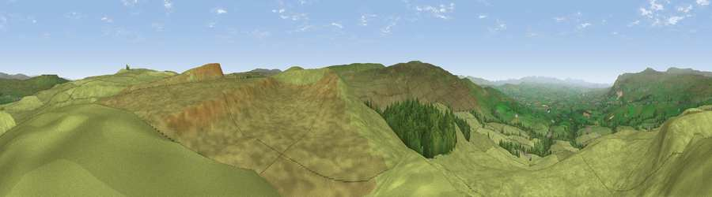

Viewpoint c10219_7705
#6158 in England · top 11% of its area beats it · — · access?Where it is
The exact computed spot (NY 85262 10975). Click the marker for map links.
Public access: no public right of way or access land is recorded at this exact spot — it may be on private land. Computed from Natural England's CRoW access layer and OpenStreetMap rights of way — not the legal definitive map. Always verify locally.
The view, rendered

A 360° render of this exact spot computed from the terrain model, tree cover and land cover — summer colours, afternoon light, calibrated against photographs of famous viewpoints. Real trees, hedges and buildings will differ in detail.
The panorama
Grey silhouette: terrain skyline in each direction (720 bearings, Earth curvature and refraction included). Dashed green: skyline with trees (+15 m) and buildings (+8 m) as obstacles. Blue strip: how far the ground is visible on each bearing.
Where the view opens
Wedge length = distance to the farthest visible ground on that bearing (vegetation-aware). Rings at 10, 25 and 50 km.
What fills the view
95% grassland · 4% woodland
Angular shares of the visible panorama (visual magnitude), not map area. Landscape diversity 0.09 (0–1 Shannon).
Key numbers
More beautiful places nearby
The staircase of upgrades: each row has a higher view potential than everything closer. Driving times are estimates from straight-line distance, calibrated against real road routing — check an actual route before setting out.
| Place | Direction | Drive | Score |
|---|---|---|---|
| Viewpoint c10212_7709 | S · 0 km | ~1 min | 73.4 |
| Viewpoint near Nateby | SSW · 9 km | ~17 min | 75.0 |
| Viewpoint near Nateby | SSW · 11 km | ~20 min | 75.7 |
| Viewpoint c10024_7603 | SSW · 11 km | ~21 min | 76.9 |
| Calders | SW · 23 km | ~39 min | 79.0 |
| Whernside | SSW · 31 km | ~49 min | 79.9 |
| Viewpoint near Bampton | W · 38 km | ~57 min | 80.4 |
| Viewpoint near Watermillock | WNW · 40 km | ~60 min | 82.6 |
54.49389, -2.22904 · source: screening · position refined by local search. Computed location — check access rights before visiting.